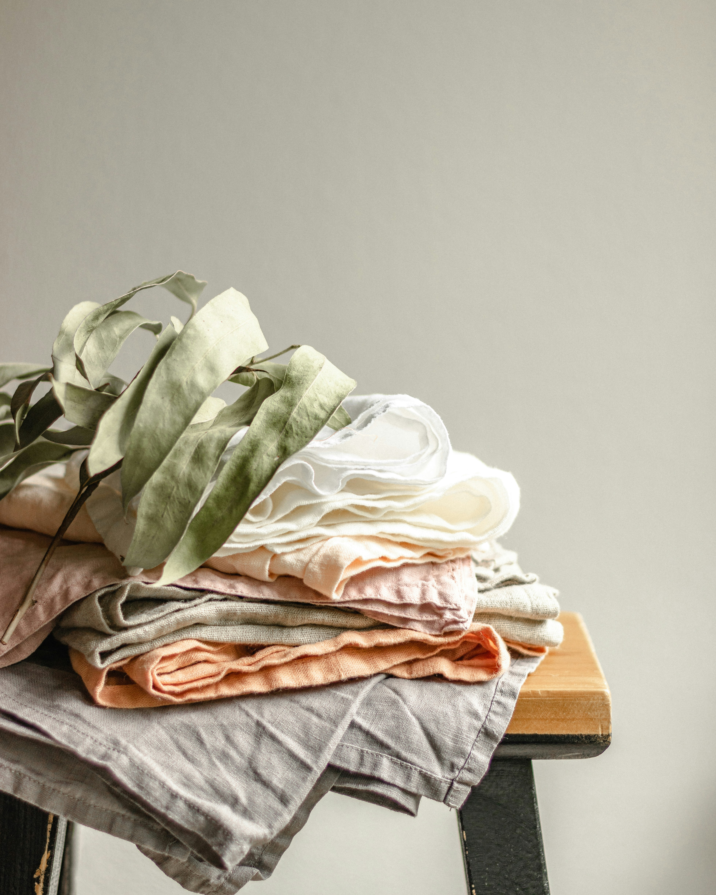

Guide til dit tøj forbrug
Den bedste måde, at mindste sit klimaaftryk er ved at være bevidst om sit forbrug og passe på det vi har.
Derfor har vi lavet en overskuelig guide med tips, til hvoran du bedst kan købe nyt og passe på det du har.
Vælg tøj i god kvalitet.
Det er vigtigt, at have tøj i god kvalitet lavet af naturlige materialer, da både produktionen er mere etisk og miljøvenlig, men også at tøjet vil holde dig længere og gavne dig mere.
Derfor er det vigtigt, at have kendskab til de forskellige materialer og hvordan de er produceret. Hold øje med vores side, da der snart vil blive lanceret en overskuelig guide over materialer.
Men som udgangspunkt, kan man altid regne med kvalitetstøj, hvis man køber uld, bambus, bomuld og silke. Derimod anbefales det at holde sig fra polyester, akryl, nylon og viskose hvis ikke produceret ordentligt.
Køb brugt tøj
Trænger man til nyt tøj, så er den klart mest miljørigtige måde, at købe tøj der allerede er produceret.
Der findes allerede alt for meget tøj, og genbrugsbutikkerne kan ikke følge med. Tag ud og kig og se om du kan finde noget fedt, billigt og miljørigtigt tøj.
Vask dit tøj efter anvisning og ved lav temperatur
Den nemmeste måde, at forlænge sit tøjs livstid, er ved at mindske slidtage.
Størstedelen af slidtagen sker under vask: tøjet bliver vasket for ofte, tøjet bliver vasket ved for høje grader, forkert vaskeprogram eller der er ikke taget stilling til materialet.
Kig derfor altid i vaskemærket på dit tøj og se hvad der er anbefalet. Eller vask som udgangspunkt ved 30 og 60 grader.
Du behøver ikke, at vaske dit tøj så ofte
Mange danskere har til vane, at vaske deres tøj efter hvert brug, men tøj kan bruges mange gange før det behøver vask.
Afhængig af aktivitet i løbet af dagen og snavs selvfølgelig.
Nedenunder er en guide til hvor ofte du bør vaske dit tøj.

En guide til tøjvask
En lille guide til vask:
. Undertøj og sokker vask efter 1 gang.
. Bukser vask efter 2-4 gange.
. Jeans vask efter 3-6 gange.
. T-shirt vask efter 2 gange.
. Strik og sweatshirts vask efter 1-4 gange.
. Jakker vask efter behov eller årligt.
Eller brug dine sunde fornuft, men der er ingen grund til at overvaske.